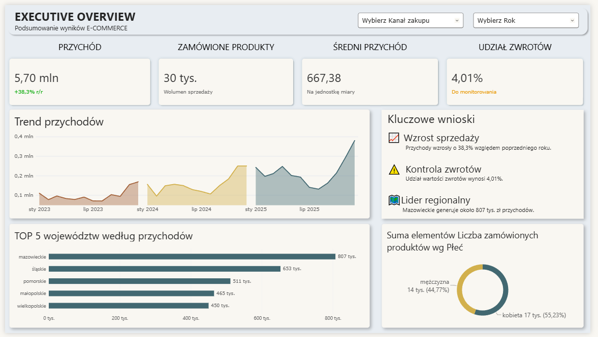
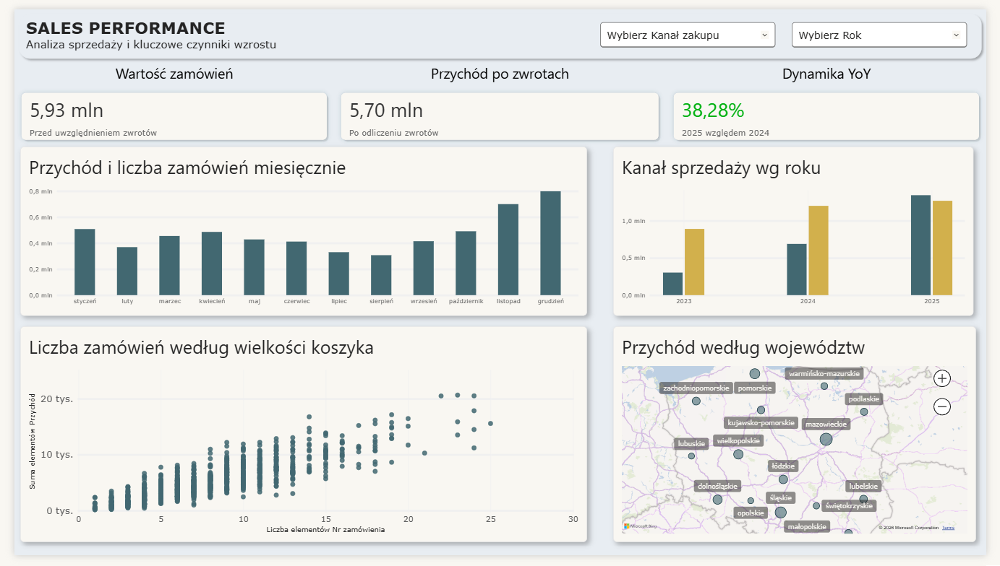
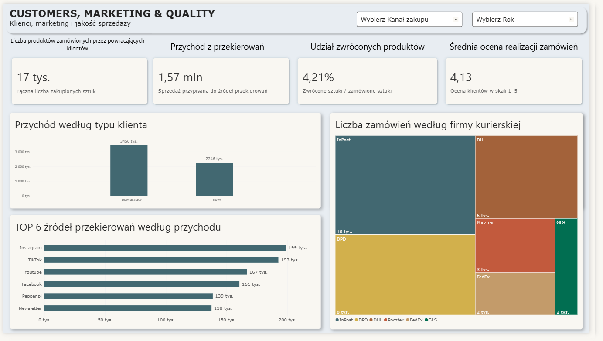

Executive Overview
A concise management summary with revenue, product volume, average revenue, return share, trend chart, key findings and a breakdown by region and gender.
A Power BI project based on a fictional online pet store, examining sales, returns, customer behaviour, marketing channels and logistics performance in e-commerce. The dashboard is organised into three complementary views: Executive Overview, Sales Performance, and Customers, Marketing & Quality.
The goal of the dashboard is to assess the performance of a fictional online pet store using key performance indicators (KPIs) in a clear, decision-oriented format. The project uses KPI measures such as revenue, order volume, year-over-year growth, return rate and average order rating, alongside customer segments, marketing sources, courier performance and selected geographic insights to support a fast business overview.
The dashboard helps organise several business areas in one place — sales, logistics, returns, customers and acquisition sources — which makes it easier to compare metrics and notice relationships between them.
This portfolio page includes visual previews and a downloadable Power BI source file. The dashboard itself was prepared in Power BI Desktop and can be further developed with additional business questions or data layers.
Below are the three dashboard screens included in the Power BI file. Together they create a coherent reporting story: general business overview, sales deep-dive and customer-marketing-quality perspective.

A concise management summary with revenue, product volume, average revenue, return share, trend chart, key findings and a breakdown by region and gender.

A sales-focused view showing order value, net revenue after returns, year-over-year dynamics, monthly results, annual channel comparison, basket-size relationship and a regional map.

A view focused on returning customers, revenue from referral sources, return share, customer satisfaction, top acquisition channels and courier performance.